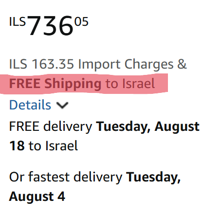

✅ בקצרה — מה חשוב לדעת
- משלוח חינם לישראל זמין על מוצרים FBA/Sold by Amazon מעל ~$49
- בדקו "FREE Shipping to Israel" בסעיף Delivery בדף המוצר לפני הוספה לעגלה
- Prime לא מבטיח משלוח חינם לישראל — הוא רלוונטי לארה"ב בלבד
- המשלוח משתנה לפי עונה ומלאי — מעקב אוטומטי חוסך את הבדיקה הידנית
האם אמזון שולח חינם לישראל בכלל?
התשובה הקצרה: כן, אבל לא תמיד ולא לכל מוצר.
אמזון מציעה משלוח חינם לישראל במקרים מסוימים בלבד, והדבר תלוי במספר תנאים כמו סוג המוכר, סכום ההזמנה, וזמינות השירות דרך Amazon Global. מי שלא מבין את התנאים האלו מפספס לא מעט הזדמנויות לחסוך כסף.
בפועל, הרבה ישראלים נתקלים במצב שבו מוצר אחד נשלח בחינם, ואחר כמעט זהה עולה עשרות דולרים משלוח. זה לא מקרי, ויש לזה הסבר ברור.
משלוח מאמזון לישראל — מה המצב ב-2026?
אמזון ארה"ב שולחת לישראל באופן שוטף, אבל לא כל מוצר באתר זמין למשלוח לכאן. הזמינות נקבעת ברמת המוצר הבודד: חלק מהמוצרים נשלחים ישירות על ידי אמזון, חלק דרך מוכרים עצמאיים שכן שולחים בינלאומית, וחלק פשוט לא זמינים לישראל בכלל.
שלושה דברים שכדאי לדעת לפני שמתחילים:
- הזמינות משתנה לפי מוצר, לא לפי חשבון. אם מוצר לא נשלח לישראל, שינוי כתובת או שיטת תשלום לא יעזור.
- המחיר בקופה הוא המחיר הסופי. אמזון גובה מראש את המסים והאגרות הרלוונטיים לישראל, כך שאין תשלום נוסף בעת שחרור החבילה ואין דמי שחרור בדואר.
- מעל $75 נכנסים לתחום החייב במס. עד הסף הזה ההזמנה פטורה; מעליו מתווספים החיובים — וגם הם נגבים מראש בקופה.
לפירוט מלא על ספי המס — מדריך מכס ומע"מ על קניות מאמזון ←
מתי מוצר מסומן כ־FREE Shipping to Israel?
כדי לקבל משלוח חינם מאמזון לישראל, צריכים להתקיים כמה תנאים מרכזיים:
1. סף מינימום להזמנה
אמזון מציבה רף של כ־$49 לקבלת משלוח חינם לישראל, אך ההטבה חלה רק על מוצרים המסומנים כזכאים לכך. אם תוסיף לעגלה פריטים נוספים שכן משתתפים במבצע ותעבור את הסכום הנדרש, ייתכן שהמוצרים הזכאים יישלחו ללא עלות משלוח, בעוד שמוצרים שאינם משתתפים עדיין יחויבו בדמי משלוח.
מקור: מדיניות הסף הרשמית של Amazon International Shopping.
2. מוצרים המשתתפים בתוכנית
לא כל מוצר זכאי למשלוח חינם. כדי לזהות מוצר כזה, צריך לראות:
- ציון של FREE Shipping to Israel בעמוד המוצר
- שהמוצר משתתף בתוכנית Amazon Global
3. מוכר ושילוח דרך אמזון
הקריטריון הכי חשוב: המוצר צריך להיות Fulfilled by Amazon או נמכר ישירות על ידי Amazon. אם מדובר במוכר צד שלישי ששולח בעצמו, לרוב לא תהיה זכאות למשלוח חינם.
4. Prime לא רלוונטי לישראל
הרבה חושבים ש־Amazon Prime נותן משלוח חינם לישראל. בפועל: Prime רלוונטי בתוך ארה"ב ואירופה.
לסקירה מלאה על Prime לישראלים — קרא: מה זה Prime ואיך זה משפיע על משלוח ←
ההבדל בין Fulfilled by Amazon לבין מוכר עצמאי
זה אחד הדברים הקריטיים להבנה:
Fulfilled by Amazon (FBA) ✅
- המוצר מאוחסן ונשלח על ידי אמזון
- זכאי לרוב להטבות כמו משלוח חינם
- משלוח מהיר ואמין יותר
Seller עצמאי (FBM) ❌
- המוכר שולח בעצמו
- עלויות משלוח משתנות
- לרוב אין משלוח חינם לישראל
אם אתה מחפש משלוח חינם לישראל, תמיד עדיף לחפש מוצרים שנשלחים על ידי אמזון (FBA).
כמה עולה משלוח מאמזון לישראל כשאין משלוח חינם?
כשאין משלוח חינם, העלויות יכולות להשתנות משמעותית לפי משקל, גודל וסוג המוצר.
| סוג מוצר | עלות משלוח משוערת |
|---|---|
| מוצר קטן (0–0.5 ק"ג) | $8 – $15 |
| מוצר בינוני (0.5–2 ק"ג) | $15 – $30 |
| מוצר גדול / כבד | $30 – $80+ |
בנוסף, יש לקחת בחשבון: מעל $75 ההזמנה כבר לא פטורה ומתווספים לה מכס ומע"מ. אבל בניגוד למה שהרבה קונים מצפים — אמזון גובה את החיובים האלה מראש, בקופה. כלומר גם בהזמנה של $150 הסכום שאתה משלם בסיום הרכישה הוא הסכום הסופי: אין חיוב נוסף בכניסה לישראל ואין דמי שחרור בדואר. חשוב להסתכל על השורה הסופית בקופה ולא על מחיר המוצר בלבד.
לפירוט מלא על מכס ומע"מ — מדריך מכס ומע"מ על קניות מאמזון ←
איך לזהות מוצרים עם משלוח חינם?
ככה זה נראה בפועל בעמוד המוצר, מתחת למחיר — שורת FREE Shipping to Israel בעמודת הקנייה שבצד. שימו לב שגם דמי היבוא (Import Charges) מופיעים כאן, כלומר הם נגבים מראש בקופה ולא בהגעת החבילה:

כמה שיטות נוספות שעובדות:
- בדוק את שורת המשלוח — חפש את הכיתוב "FREE Shipping to Israel" או "Ships to Israel" בעמוד המוצר.
- השתמש בפילטרים — בצד שמאל של אמזון, סמן "משלוח בינלאומי" (Amazon Global). לעיתים מופיע גם סינון של משלוח חינם.
- בדיקה בדף המוצר או בתוצאות החיפוש — בדרך כלל ניתן לראות כבר בדף תוצאות החיפוש אם המוצר זכאי למשלוח חינם ברכישה מעל $49, או בעמוד המוצר עצמו בצד ימין.
- בדוק מוצרים דומים — אותו מוצר בדיוק יכול להימכר על ידי כמה מוכרים, ורק אחד מהם מציע משלוח חינם.
עוד דרכים לזהות מוצרים עם משלוח חינם — 4 דרכים לבדוק אם מוצר מגיע בחינם לישראל ←
למה זה כל כך לא עקבי?
אמזון משנה זמינות משלוחים כל הזמן, בגלל:
- מלאי במחסנים שונים
- שינויי מדיניות
- עלויות שילוח משתנות
- זמינות לפי מדינה
התוצאה: מוצר שלא נשלח היום, יכול להופיע עם משלוח חינם מחר.
"Eligible products for free international shipping are determined dynamically based on fulfillment center availability, carrier rates, and participation in the Amazon Global Store program."
— Amazon Help Center — International Shipping Rates & Information
מתי כדאי להמתין לפני הקנייה?
לא תמיד כדאי לקנות מיד. ישנן תקופות שנתיות שבהן אמזון מרחיבה משמעותית את זמינות המשלוח החינם הבינלאומי:
- Prime Day (יולי) — אירוע המבצעים הגדול של אמזון. מוצרים רבים שבמהלך השנה עולים $12–$18 משלוח מציעים לפתע משלוח חינם לישראל.
- בלאק פריידי ו-Cyber Monday (נובמבר) — שיא עונת הקניות. אמזון מציעה הנחות משמעותיות ולעיתים ספי משלוח חינם נמוכים יותר.
- ינואר–פברואר — לאחר עונת החגים, אמזון לעיתים מציעה תנאי משלוח נוחים יותר כדי לפזר מלאי.
אם אתם לא במצב דחוף — כדאי לבדוק האם המוצר שאתם רוצים נמצא בסמוך לאחת מהתקופות האלה. המתנה של שבועיים עד חודש יכולה לחסוך $10–$20 ולהוריד את המחיר הכולל משמעותית.
כדי לא לפספס את הרגע שהמשלוח מתאפס — כדאי להפעיל מעקב אוטומטי על המוצר.
הטריק: הוספת פריט קטן לעגלה
אחד הטריקים הפחות ידועים: אם ההזמנה שלכם קרובה לסף המשלוח החינם אבל לא מגיעה אליו — הוספת פריט זול יכולה לעבור את הסף ולבטל את עלות המשלוח של שאר הפריטים.
דוגמה מספרית:
- קניתם ספר ב-$44 — משלוח $12
- הוספתם סוללות AA ב-$6 — עברתם את $49
- המשלוח על הספר: חינם ✅
- שילמתם $50 במקום $56 — חסכתם $6 בפועל
כמובן שזה עובד רק על פריטים שמשתתפים בתוכנית המשלוח החינם. חפשו פריטים קטנים שאתם ממילא צריכים — סוללות, כבלים, מגנטים, ציוד משרדי — ובדקו אם הם FBA.
הטעות שרוב האנשים עושים
רוב המשתמשים:
- בודקים מוצר פעם אחת
- רואים שאין משלוח לישראל
- מוותרים — או גרוע יותר, קונים ומשלמים משלוח יקר
אבל בפועל, הרבה מוצרים חוזרים להיות זמינים למשלוח חינם תוך ימים או שבועות. הסיבה: אמזון מחשבת מחדש עלויות משלוח בינלאומיות לפי עומס מחסנים, עלות שילוח נוכחית, ומדיניות מכירה של המוכר.
מי שמוותר מהר — משלם. מי שממתין ועוקב — חוסך. ההבדל הוא לא מזל אלא מידע.
אז איך לא לפספס מוצרים עם משלוח חינם?
לא תמיד קל לעקוב ידנית אחרי כל מוצר, במיוחד אם אתה מחכה לירידת מחיר או חזרת משלוח לישראל.
במקום לבדוק שוב ושוב, אפשר להשתמש בכלי כמו AMZFREEIL שמאפשר:
- לנטר מוצרים מאמזון
- לקבל התראה כשהם חוזרים להישלח לישראל
- לקבל עדכון כשהמשלוח הופך לחינם
למדריך השלם לשימוש בכלי — ראה את המדריך המלא ←
שאלות נפוצות
האם Amazon Prime נותן משלוח חינם לישראל?
לא. Amazon Prime רלוונטי בעיקר לארה"ב ולאירופה.
מה הסכום המינימלי לקבלת משלוח חינם?
ב־Amazon, הסכום המינימלי למשלוח חינם לישראל הוא בדרך כלל כ־$49. חשוב לדעת שההטבה חלה רק על מוצרים המסומנים כזכאים למשלוח חינם, ולכן גם אם תעברו את הסכום הנדרש, רק פריטים משתתפים יישלחו ללא עלות, בעוד אחרים עדיין עשויים להיות כרוכים בדמי משלוח.
כמה זמן לוקח משלוח מאמזון לישראל?
בדרך כלל 7 עד 21 ימי עסקים, תלוי במחסן שממנו נשלח המוצר ובסוג המשלוח שנבחר.
האם כל המוצרים נשלחים לישראל?
לא. רק מוצרים שמשתתפים ב-Amazon Global ונשלחים על ידי אמזון עצמה (FBA) זכאים בדרך כלל למשלוח חינם לישראל.
מה ההבדל בין FBA ל-FBM מבחינת משלוח לישראל?
FBA (Fulfilled by Amazon) — אמזון אורזת ושולחת בעצמה, כולל זכאות למשלוח חינם לישראל. FBM (Fulfilled by Merchant) — מוכר פרטי שולח בעצמו; לרוב אינו מציע משלוח חינם לישראל ולוקח יותר זמן.
האם יש עלות נוספת בקבלת החבילה מאמזון בישראל?
לא. אמזון מיישמת "Duties & Taxes Included" לישראל — המחיר שמשלמים בעת הרכישה הוא המחיר הסופי. אין תשלום נוסף בדואר ישראל ואין דמי שחרור מכס.
מה זה Amazon Global ואיך זה קשור למשלוח לישראל?
Amazon Global היא תוכנית המשלוח הבינלאומי של אמזון, המאפשרת שליחת מוצרים מאחסני FBA ליותר מ-100 מדינות, כולל ישראל. רק מוצרים המשתתפים ב-Amazon Global זכאים למשלוח חינם לישראל.
האם אמזון שולחת לכל כתובת בישראל?
כן. אמזון שולחת לכל כתובת בישראל, כולל יישובים בפריפריה. יש להזין את הכתובת באנגלית בחשבון האמזון.
סיכום
משלוח חינם מאמזון לישראל קיים, אבל הוא תלוי בתנאים ברורים: סכום הזמנה מינימלי, מוצר המשתתף בתוכנית, ומשלוח דרך אמזון עצמה. מי שמבין איך זה עובד יכול לחסוך לא מעט כסף.
הנקודות העיקריות לזכור:
- ✅ חפשו "FREE Shipping to Israel" — לא "FREE Shipping" סתם
- ✅ תעדיפו מוצרי FBA על פני FBM
- ✅ נצלו תקופות עונתיות (Prime Day, בלאק פריידי)
- ✅ השתמשו בטריק הפריט הנוסף כדי לעבור את הסף
- ✅ אל תוותרו — עקבו, המתינו, וחסכו
ומי שלא רוצה לפספס הזדמנויות — כדאי להשתמש בפתרון שמנטר את זה אוטומטית.
🔔
רוצה לדעת מתי מוצר שאתה רוצה חוזר עם משלוח חינם לישראל?
הכלי שלנו מנטר מוצרים מאמזון ושולח התראה ישר למייל שלך.
נסה חינם עכשיו ללא כרטיס אשראי · עובד מיד